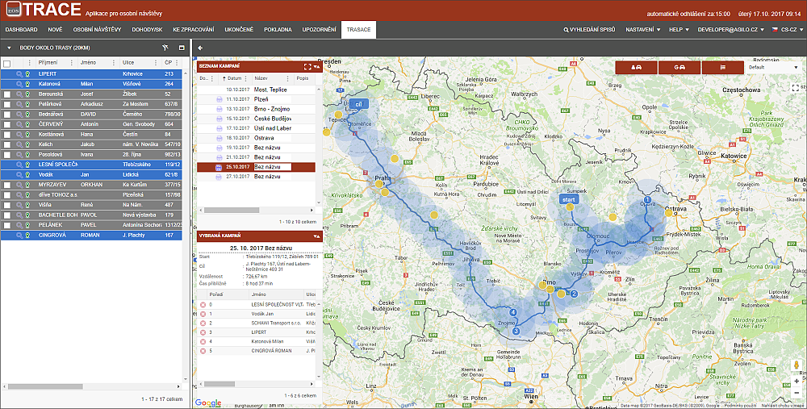

Trasace
Záložka Trasace slouží pro plánování trasy inspektora při plnění jeho hlavního úkolu - provádět osobní návštěvy. Trasace pomáhá IP jednoduše vybírat adresy a plánovat si u nich termín OSN tak, aby najel co nejméně kilometrů, navštívil co nejvíce míst, která jsou poblíž výjezdu atd. Inspektor má možnost si nastavit vlastní cestu, ale provést i optimalizaci trasy.
V procesu přijímání nového spisu na záložce „NOVÝ“ je popsaná funkcionalita, která zajistí validaci adresy s vazbou na GPS souřadnice.
Současně, pokud bude chtít inspektor navštívit po cestě i jiné adresy, které nesouvisejí s OSN, může si je do itineráře přidat a zahrnout do trasy.

Trasace se řídí jednoduchým pravidlem - Který dlužník má naplánovaný datum OSN, ten je v to datum vložen do trasace. Pokud je Datum OSN procesem přesunuto či změněno, adresa dlužníka se přesune do odpovídající kampaně.